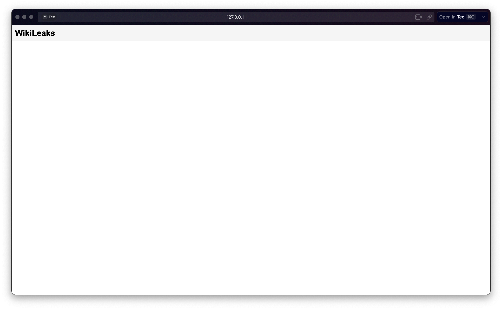
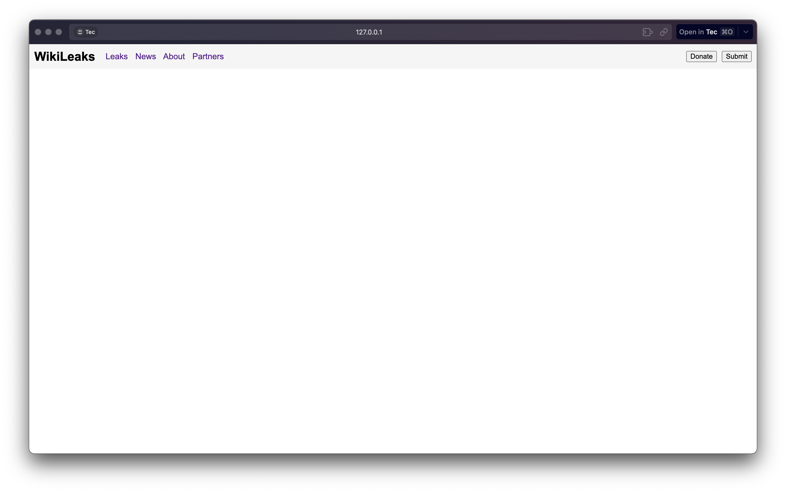
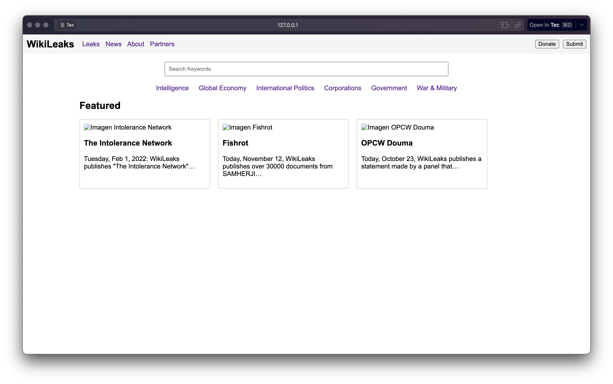
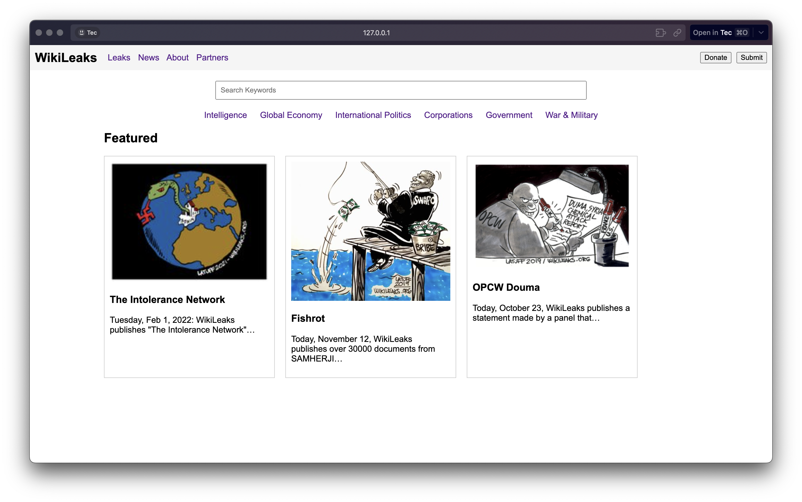

Avance 1
Esta captura muestra la estructura base del documento con un encabezado muy simple.
Avance 2
En este paso se agregó la barra de navegación primaria y los botones principales.
Avance 3
Aquí se incluyen el buscador, la barra de categorías y la sección “Featured” con tarjetas de ejemplo.
Avance 4
El resultado final, donde se integran todos los elementos anteriores.